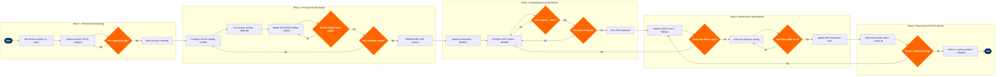

| Step | L4 Step Name | KPI / Target | Pain Point / Risk | Gate |
|---|---|---|---|---|
| 1.1 | Benchmark ancillary revenue vs. peer carriers | Ancillary revenue per passenger ≥ $35 (IATA LCC benchmark); report produced annually | IATA benchmark data lags 12–18 months; ultra-LCC peers (Spirit, Frontier) distort averages, masking true FSC comparison group and overstating apparent gap | |
| 1.2 | Analyse ancillary product mix by revenue category | Top-3 categories contribute ≥70% of total ancillary revenue; data refresh ≤24 hours | Altéa PSS ancillary sales codes are inconsistently applied by airport agents, causing product misclassification in Redshift that distorts category-level P&L | |
| 1.3 | Identify new ancillary product opportunities | Minimum 3 new ancillary product candidates identified per annual review cycle | SkyCAST O&D segmentation is designed for seat demand forecasting, not ancillary willingness-to-pay; proxy metrics must substitute for direct demand estimation, reducing confidence | ⚠ |
| 2.1 | Configure ancillary service catalog in PSS | 100% of approved ancillaries configured and testable in Altéa within 5 business days of sign-off | EMD issuance rules require coordination with Finance for BSP settlement alignment; misconfigured EMD types generate revenue accounting errors and trigger BSP dispute processes | |
| 2.2 | Set dynamic pricing rules for seats and baggage | Elasticity model coverage ≥80% of O&D pairs; yield uplift ≥8% vs. static pricing baseline | PROS RM dynamic ancillary pricing requires separate model training from core RM; data sparsity on thin routes produces unreliable elasticity estimates, defaulting to static fallback pricing | |
| 2.3 | Design fare family bundles with ancillary inclusions | Bundle attach rate ≥40% of total bookings; bundle margin ≥ à la carte revenue equivalent | ATPCO Category 15 (Sales Restrictions) and Category 31 (Voluntary Changes) rules must be manually aligned with each bundle tier — a mismatch causes GDS display failures and customer refund claims | ⚠ |
| 2.4 | Validate ancillary offers in NDC API test environment | 100% of ancillary products surfaced in NDC AirShopping response; NDC API error rate < 0.5% | IATA NDC 21.3 schema requires ancillaries as ServiceDefinitionID objects; legacy Altéa ancillary codes must be manually mapped — mappings break on Altéa version upgrades requiring re-validation | ⚠ |
| 3.1 | Segment passengers for targeted ancillary offers | Propensity model AUC ≥0.72 for top-3 ancillary categories; segments refreshed ≤24 hours before departure | Loyalty data is siloed from GDS bookings — indirect-channel passengers have sparse profiles, reducing propensity model accuracy for ~35% of bookings and defaulting to generic offers | |
| 3.2 | Configure real-time ancillary offer engine | Offer generation latency < 200ms per PNR; personalised offer conversion rate ≥15% | AltéaRM offer engine integration with PROS dynamic ancillary prices requires a custom middleware API; latency spikes during peak booking windows trigger offer timeouts and fallback to static pricing | ⚠ |
| 3.3 | Deploy personalised offers via direct and GDS channels | NDC channel ancillary attach rate ≥ direct channel within 6 months of launch; GDS ancillary display compliance ≥90% of enabled PCCs | Travelport and Sabre GDS ancillary merchandising varies by Point of Sale — not all TMC-configured PCC terminals display ancillary offers, suppressing B2B ancillary revenue from managed travel | ⚠ |
| 4.1 | Monitor ancillary attach rates by channel and product | Ancillary revenue as % of total revenue ≥15%; dashboard data latency < 4 hours | Altéa PSS real-time data feed to Tableau relies on an AWS Kinesis stream — stream failures during high-volume booking periods create data gaps that delay corrective pricing actions by 8–12 hours | ⚠ |
| 4.2 | Conduct ancillary price elasticity A/B testing | A/B test significance ≥95% confidence interval; minimum 500 transactions per test cell | PROS RM A/B testing for ancillaries is not natively integrated with Altéa PSS booking flows — test cell assignment is enforced via custom middleware, increasing build and maintenance overhead | ⚠ |
| 4.3 | Optimise ancillary offer placement and sequencing | Incremental ancillary revenue uplift ≥5% per optimisation cycle; cycle cadence monthly | Post-booking ancillary upsell in the pre-check-in window is constrained by Altéa PSS notification infrastructure — push notification capability requires a third-party integration not yet fully deployed at most carriers | |
| 5.1 | Generate ancillary revenue performance report | Report delivered within 3 business days of month-end; forecast accuracy ≤5% variance vs. actuals | SAP S/4HANA Finance GL ancillary revenue codes do not always align with Altéa PSS ancillary sales codes — reconciliation requires a manual mapping table maintained by Finance that lags product catalog changes | |
| 5.2 | Review portfolio and retire underperforming products | Products with <0.5% attach rate and negative NPS reviewed quarterly; discontinuation decision within 30 days of review | Discontinuing an ancillary product in Altéa PSS requires reversal of EMD settlement rules, ATPCO filing withdrawal, and NDC schema update — cross-system coordination takes 4–6 weeks, extending underperformer lifecycles | ⚠ |